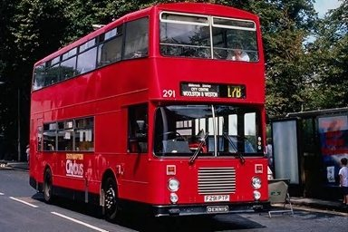

Image Processing Projects
An Example-based Image Retrieval System
Description
Some owners of digital cameras with poor organization of photos will probably encounter a problem of finding a specifi picture. They can clearly remember the objects and contents in that picture but do not remember when it was taken of which file it is in. Sometimes people want to search images that are similar to the one he or she already have. My program could help automatically output the required similiar images from a database based on the input example image.My work
1. Collected all images for this project.2. Designed a new algorithm which improved correct rate dramaticly。
3. Wrote all matlab code.
4. Achieved the best project in the course and the project report was kept by professor.
Examples
Input
Output

Input
Output
Input

Output
Sparse representation for face recognition
Description
Face recognition is always an important issue in security field, and there are several classic methods in this field such as PCA(Principal Component Analysis) and FLD(Fisher's Linear Discriminant). But those methods are very limited and not robust to variation, brightness and occupation Here we implement sparse representation method. We can represent the test sample in an overcomplete dictionary whose base elements are the training samples themselves. If sufficient samples are available from each class, it will be possible to represent the test sample from tha same class.My work
1. Derived all math formulas used in this algorithm.2. Programmed sparse representation in C++ combined with openCV.
3. Coded PCA and FLD in matlab and compared those three methods.